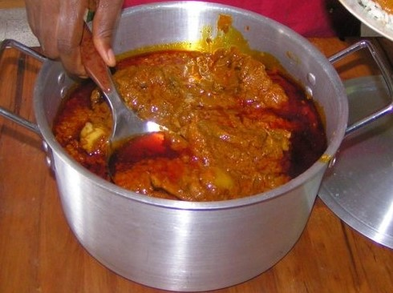

Palm Butter

Size = 106.91 kb | Resolution 721x539
Palm-Butter is a traditional south-eastern dish in Liberia.
Palm-Butter can be paired with rice, fufu, cassava ,
grator Dumboy and Deepor for a healty and delicious meal.
Note: Fufu, grator Dumboy and Deepor can be made from cassava.
Ingredients
- Fresh Red Palm Nuts
- Pepper
- Fish, Crab, Crab-Fish or meat
- Salt
- Seasoning
- Vita
- Oions or Palm-Butter-Leaves
Steps
- Wash the palm nuts
- Put it in the pot, add water and place it on the fire and wait for 20-30 mins for it to boil.
- Clean the fish, crab or meat and season it and steam it for 10 mins.
- When it boils for that time, beat the palmnuts until the flesh or and the nuts are separated.
- Add water on it and squeze it with your hands until the juice is drain from the palm flesh.
- You can the repeat the process 2-3 times base on your preference.
- After this process, set it back on the fire, add the oions or Palm-Butter-Leaves to it and let it boil for 10 mins.
- After 10 mins bolis, add the pepper and 2 vita
- Add the fish ,crab or meat and let it boil for 10 mins and add 2 more vita.
- Reduce the heat and let it boil slowly until you get the desire thickness.